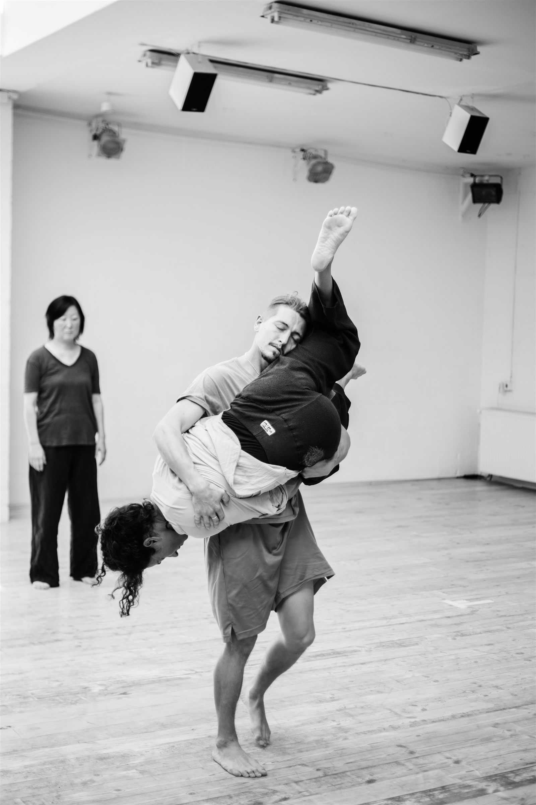

present-time composition (PTC)
Imagine a collective music improvisation that has all the variety, clarity, and originality of outstanding composed music, without sacrificing the spontaneity, risk-taking, and unpredictable, moment-to-moment discovery that make improvisation so vibrant and compelling. What kinds of awareness and abilities would we need to create such music, and how might we develop them?
Present-Time Composition (PTC) is a method of improvisation that explores these possibilities.
PTC begins by attending closely to inner impulses: how they arise, what information they contain, and how we respond to them. Far from being random noise, these impulses embody the unfolding interplay between ourselves and those around us.
By tuning into this flow of individual and shared experience, improvisers learn to act in the moment together, making collective creative choices that give rise to meaningful musical content and structure, from the level of the motif or phrase all the way up to large-scale form.